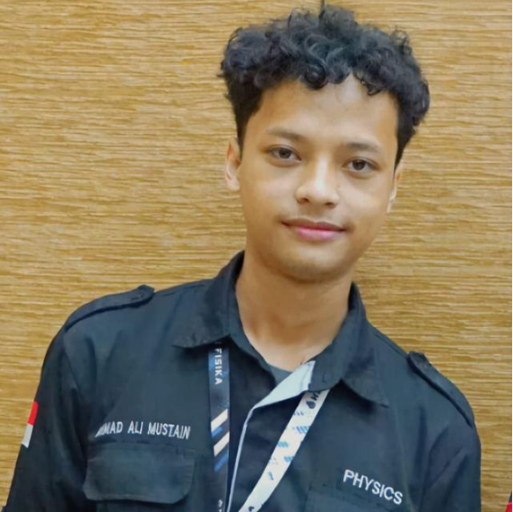
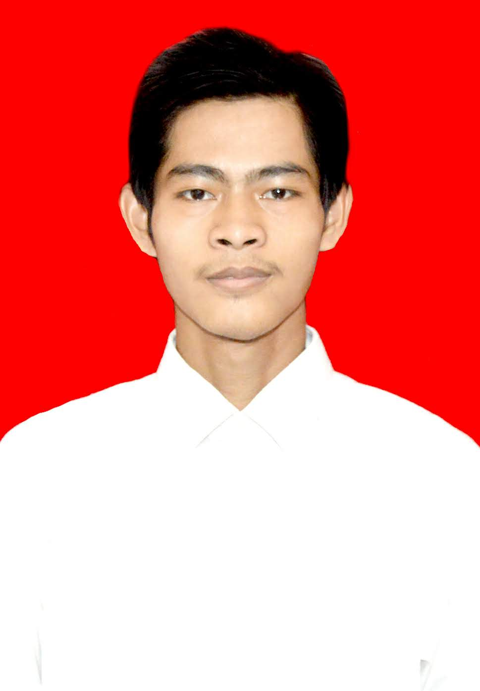

Tentang Kami
Visi
Menjadi jembatan digital yang menghubungkan pesantren di seluruh Indonesia untuk kolaborasi dan modernisasi pendidikan Islam.
Misi
1. Memfasilitasi jejaring antar-pesantren.
2. Mempromosikan keunggulan pesantren.
3. Mendorong
keterbukaan dan perkembangan.
Tentang Kami
PSNet (Pesantren Sphere & Networking) adalah platform yang hadir pada 2025 untuk mendukung adaptasi digital pesantren di Indonesia.
Tim Kami
Bima Pranawira
Leader/CEO

Ali Mustain
Desainer

Ronando Musyafiri
Front End Developer